|
|
Le Moulin de l'Etoile
Livres temporairement indisponibles ou épuisés
|
Autour des 7 Instructions aux Frères en Saint-Jean
|
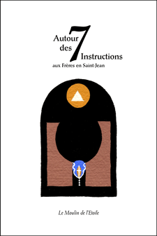
|
Philippe Subrini ayant cité ce texte dans sa préface aux Sept Instructions aux Frères en Saint-Jean, plusieurs lecteurs nous ont sollicités afin de l'obtenir.
C'est la raison pour laquelle nous vous proposons la présente parution complémentaire, convaincus que cet écrit, qui témoigne d'une profonde connaissance de la théologie comme de l'hermétisme chrétien, éclairera certains lecteurs comme il nous éclaira par le passé. |
Format :
1 volume 12 x 18 cm
Broché, 46 pages
Tirage limité à 50 exemplaires numérotés
|
|
| _____________________________________________________________________________________________________________________ |
|
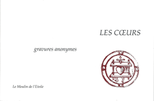
|
Ces curieuses
estampes anonymes ont un destin hors du
commun : celui d'avoir attendu quatre
siècles avant de délivrer
aux curieux leurs étranges messages…
Louis Charbonneau-Lassay
ne les aurait sans nul doute reniées
s'il en avait eu connaissance. |
Format :
1 volume 12 x 18 cm
Broché, 78 pages
Tirage limité
à 50 exemplaires numérotés
|
|
| _________________________________________________________________________________________________________________ |
|
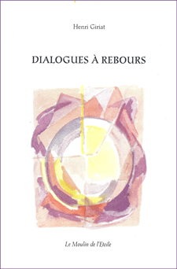
|
Au travers d’un dialogue intérieur, Henri Giriat aborde un à un les thèmes de la métaphysique, de l’initiation, des religions, de l’ésotérisme, du symbole, du rite, de la gnose, de l’esprit pur, ou encore de la prière du cœur à l’aune de la recherche d’un retour à l’unité.
Ce texte brillant, limpide et sans faux-semblants aidera, par-delà les origines et les obédiences, quiconque est en quête d'absolu et de vérité.
|
Format :
1 volume 18 x 12 cm
Broché, 90 pages
Tirage limité
à 50 exemplaires
|
|
| _________________________________________________________________________________________________________________ |
Dante et saint Bernard de Clairvaux - Rapports du spirituel et du temporel dans l'art
|
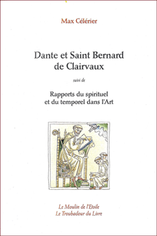
|
Dans ces deux études inédites, Max Célérier aborde la rencontre spirituelle de Dante et de Saint Bernard, ce dernier ouvrant au poète de la Divine Comédie la voie vers la contemplation de la lumière éternelle. Il aborde ensuite les rapports entre temporel et spirituel puis le thème de la prédestination, avec la reprise du symbole universel de la rose chantée tant par Bernard que par Dante.
Ces deux textes, écrits respectivement en 1990 et 1996, sont les témoins de l’érudition, de la clarté et de la profondeur de la pensée de l’auteur. Max Célérier, qui nous a quittés en 2006, fut un docteur en médecine dont les patients vantaient l’écoute et la disponibilité. Il a également publié plusieurs études dans diverses revues dont les Cahiers de Bourgogne aux côtés de René Dürrbach et Nicolas Boon. Il est enfin l’auteur de l’ouvrage de référence Regards sur la symbolique de la Toison d’Or.
|
Format :
1 volume 12 x 18 cm
Broché, 80 pages
Tirage limité
à 100 exemplaires
|
|
| _________________________________________________________________________________________________________________ |
|
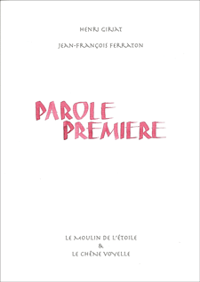
|
Texte mystique de Henri Giriat, illustré de 7 encres de Jean-François Ferraton.
LUI LE VERBE
Sans commencement ni fin
toujours présent
du commencement
à la fin
Cela c’est lui le Verbe le Logos
la Parole
qui maintient
et main tenant
relève l’horizon
renoue la fin au commencement
en orbe circulaire
l’Alpha et l’Omega
|
Format :
1 volume 14 x 21 cm
Broché, 38 pages et calques illustrés ; tryptique inséré
Tirage limité
à 100 exemplaires
|
|
| __________________________________________________________________________________________________________________ |
Armes avec motifs astrologiques et talismaniques
|
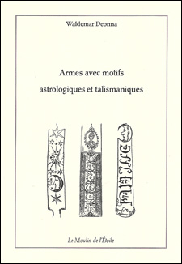
|
Cité par René Guénon dans le cadre d'une étude sur le "quatre de chiffre", ce texte rare est paru initialement dans la revue L'histoire des religions de juillet-octobre 1924.
Ce travail remarquable de Waldemar Deonna intéressera tout autant les chercheurs férus d'hermétisme et de symbolisme que les amateurs d'armes anciennes par la précision de ses analyses et sa richesse documentaire.
|
Format :
1 volume 14 x 21 cm
Broché, 74 pages
Tirage limité
à 100 exemplaires
|
|
| _________________________________________________________________________________________________________________ |
Hermès Trismégiste et le rêve alchimique - Imaginaire symbolique & Rationalité
|
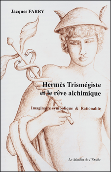
|
Cette étude pose la question de savoir si la tradition herméticoalchimique
peut être perçue comme relevant de la philosophie
classique, même si elle apparaît comme son image inversée.
Ne prétendant pas résoudre le problème, l’auteur se borne à le poser
en commentant les auteurs qui se sont penchés sur la question.
Aussi ce travail n’est-il pas une thèse : plus modestement, il se propose
de présenter les principaux aspects de la doctrine d’Hermès Trismégiste
et de son corollaire, l’alchimie. Ce faisant, il les passe au crible de la
réflexion philosophique.
Chapitre après chapitre, Jacques Fabry présente la légende homérique
d’Hermès enfant, puis expose l’enseignement de celui qui est devenu,
au cours des siècles, la fi gure emblématique d’Hermès Trismégiste.
Evoquant son rayonnement et son infl uence sur la pensée occidentale,
il rappelle les grandes figures historiques qui ont intégré dans leur pensée
l’essentiel de l’enseignement hermétique. Il commente notamment
l’idée exposée par Ralf Liedtke selon laquelle l’Hermétisme serait
« une philosophie traditionnelle de la différence ». L’auteur présente également l’alchimie comme la réalisation concrète des principes
hermétiques et étudie l’oeuvre de régénération spirituelle attachée
à l’alchimie. Il souligne ici combien le Grand OEuvre s’inscrit dans
la perspective goethéenne de l’amour universel de toute vie prônée
par la tradition hermétique. Dans cette optique, cet essai est à regarder à la fois comme une réflexion philosophique et un parcours initiatique.
|
Format :
1 volume 15 x 23 cm
Broché, 388 pages
Tirage limité
|
|
| _________________________________________________________________________________________________________________ |
La symbolique du poisson - Genèse et permanence d'un élément propitiatoire en Chine
|
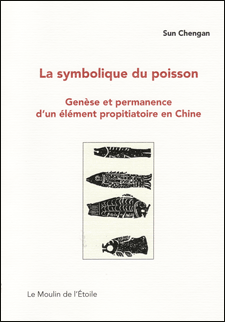
|
Les éléments propitiatoires conservent dans la société chinoise actuelle une importance sans égal, une présence liée à l'impact permanent de leur existant à travers les éléments les plus larges de l'imaginaire humain.
Si des séquences de vie sociale permettent de révéler la densité de ces marqueurs, Sun Chengan, enseignant en langue et civilisation chinoises à Paris-Sorbonne, mène des recherches sur les symboles qui permettent de lire et de comprendre les images les plus diverses, qu’elles soient d’essence populaire ou bien présentes dans des lieux de Cour, à la ville, ou dans des sites archéologiques. Ce chercheur a ainsi conduit une étude sur la présence constante du poisson en Chine à travers la richesse et la diversité des découvertes archéologiques (jades, céramique) autant qu’il a exploré les sources historiques et ethnologiques (ouvrages classiques, images propitiatoires, objets divers) et des sources plus contemporaines voire d’avant-garde (peinture, gravure,…). Une approche globale qui conforte et éclaire sur l'abondance et la complexité de l’une de ces images, celle du poisson qui reste synonyme d’abondance matérielle. Une iconographie de première main, efficace et pertinente, souligne et corrobore les propos de l’auteur.
|
Format :
1 volume 14 x 21 cm
Broché, 104 pages
Tirage limité
|
|
| _________________________________________________________________________________________________________________ |
Compagnonnages européens et musulmans - Cagots et Mudejares
|
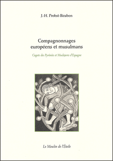
|
Le présent travail réunit, en un seul volume, quatre articles demeurant assez mal connus d’un auteur à l’impressionnant parcours universitaire et maçonnique :
-Les artisans Mudejares et les églises romanes
de la France (1925) ;
-Cagots des Pyrénées
et Mudejares d’Espagne (1932) ;
-Compagnonnages européens et musulmans :
influences ou communes origines (1936) ;
-Existe-t-il des liens spirituels et constructifs entre
le Temple, les Compagnons et le Celtisme (1952).
Au travers de ces articles, Probst-Biraben nous rappelle l’importance des influences musulmanes dans les compagnonnages occidentaux.
|
Format :
1 volume 14 x 21 cm
Broché, 62 pages
Tirage limité
à 100 exemplaires
|
|
| _________________________________________________________________________________________________________________ |
Les marques secrètes des imprimeurs de la Renaissance
|
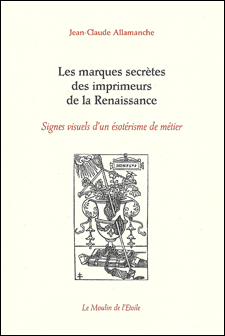
|
A la suite d'un parcours riche d'expériences en qualité de typographe, Jean-Claude Allamanche nous relate ici les secrets qui lui furent transmis par les imprimeurs de métier au cours de sa carrière.
Simple et claire, cette étude aborde tour à tour les fondements spirituels, la doctrine et la métaphysique des maîtres imprimeurs de la Renaissance dont l'influence reste aujourd'hui plus que jamais vivace.
|
Format :
1 volume 12 x 18 cm
Broché, 64 pages
Tirage limité
à 100 exemplaires
|
|
| __________________________________________________________________________________________________________________ |
|
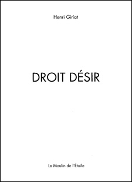
|
Si d'aventure cet écrit suggérait une voie à suivre, jamais Henri Giriat ne pourrais prétendre l'avoir parcourue. Pourtant, si lointain qu'en soit l'accomplissement, nous avons tous la possibilité d'en apercevoir la visée, pour peu que par un acte délibéré de la conscience, nous nous penchions sur les profondeurs de notre être.
Plus même qu'un sentiment, nous éprouvons à cet instant une sensation de présence accompagnée d'un état de délicate félicité.
Les traditions disent le cœur. Sous cette image, elles désignent le point nodal de notre entité, extrêmement ténu par sa dimension, infiniment grand par ses résonnances, espace de connaissance par union, par fusion, qui est le propre de l'amour.
Certes ce passage est fugitif. Mais-en avoir fait l'expérience un jour, par quelle grâce, à la faveur d'une parole, d'un regard, d'un éclair de la beauté, peut susciter l'élan d'une quête inlassable pour une très proche et très lointaine ressaisie de notre nature perdue. Notre vouloir, mobilisant nos énergies devient désir.
Où l’auteur a-t-il entendu parler des Chevaliers du Droit Désir ? Ce fut un éblouissement. Depuis lors plus rien ne lui en a signalé la présence. A terme se dévoilerait le Graal. N'y voyons pas la matérialité d'un objet rituel, même si le symbole nous enchante, mais une réalité dormante à ressentir au plus intime de notre vie, vase d'élection, vaissel du cœur, le vaisseau de nos migrations stellaires.
Par l'alchimie de l'âme, il est à l'origine des transformations de nos énergies – de nos « puissances ». Il est l'office de toute transsubstantiation. Il scelle la conjonction du corps et de l'esprit, comme seule l'espèce humaine en est capable parmi toutes les espèces vivantes, visibles et invisibles. Ni ange, ni bête, mais à l'un et l'autre appartenant.
Cette voie n'est pas réservée à une tradition spécifique. Elle est ouverte à tout homme, quel que soit son climat. Nous en possédons la virtualité par droit de naissance. Lorsque la légende dit que les dépositaires du Graal l'ont emporté en Orient à un moment déclinant de notre cycle, il faut entendre que cet Orient est en nous, en occultation, et qu'il nous est toujours loisible de nous en approcher. A notre seul désir. Par un seul acte, et rituel si l’on ose dire, un regard d'attention au cœur. |
Format :
1 volume 14 x 21 cm
Broché, 90 pages
Tirage limité
à 100 exemplaires
|
|
| __________________________________________________________________________________________________________________ |
Les bons cousins charbonniers / Les marques de tailleurs de pierre
|
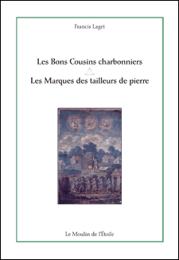
|
A travers ces deux études, Francis Laget nous invite à découvrir ou à redécouvrir l’histoire, la symbolique et les rites des Bons Cousins Charbonniers puis des tailleurs de pierre.
L’étude relative aux Bons Cousins a été présentée oralement le 2 Juillet 1994 à La Bretenière, en forêt de Chaux, à l’occasion de la bénédiction de l’oratoire de Saint Thibaut.
Le travail effectué sur les marques de tailleurs de pierre a par ailleurs servi de support aux travaux de bon nombre d’associations à la fin des années 1980.
Ces pages d’érudition, réalisées sur la base de recherches personnelles et de documents inédits, apportent un éclairage nouveau à ces sujets essentiels pour l’histoire des compagnonnages.
|
Format :
1 volume 14 x 21 cm
Broché, 114 pages
Tirage limité
à 100 exemplaires
|
|
| __________________________________________________________________________________________________________________ |
L'interprétation ésotérique de l'Evangile selon René Guénon
|
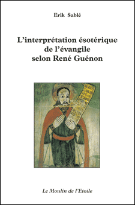
|
Comme tous les textes sacrés, l'évangile possède plusieurs niveaux d'interprétation. Il a donc aussi un sens ésotérique, métaphysique, qui révèle son aspect le plus profond, et certaines paroles du Christ très énigmatiques dévoilent leur signification seulement grâce à cette clef de lecture.
René Guénon s'est plus particulièrement attaché au décryptage de ce sens métaphysique. Les commentaires qu'il a faits de certaines paroles de l'évangile se trouvent dispersés un peu partout dans son oeuvre et Erik Sablé a estimé intéressant de les réunir. En les situant dans un ensemble, elles s'éclairent les unes les autres et montrent l'universalité du texte évangélique. Si ces commentaires permettent de comprendre le sens secret de l'évangile, ils laissent également place à l'inexprimable, ce que chacun devra réaliser en lui, dans le secret de son coeur. |
Format :
1 volume 12 x 18 cm
Broché, 56 pages
Tirage limité
à 100 exemplaires
|
|
| __________________________________________________________________________________________________________________ |
|
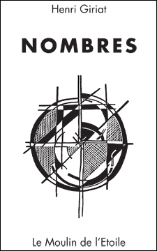
|
En nous proposant une méditation sur les nombres, Henri Giriat nous place d'emblée sur le plan du sacré, le monde profane n'ayant aucun accès au nombre. En effet, celui-ci ne "compte" pas, il signifie.
Le texte proposé ici est court ; seul son auteur pourrait dire ce qu'il en coûte de patience et d'humilité - c'est à dire d'expérience véritable - pour produire, au doux feu de la méditation et de l'amour, des mots d'une telle densité.
Un texte dont nous ne pouvons que recommander la lecture à tous les "frères en Saint Jean" qui trouveront également d'autres pages magnifiques de cet auteur à la lecture de EVA AVE, paru aux éditions Arma Artis.
|
Format :
1 volume 12 x 18 cm
Broché, 26 pages
Tirage limité
à 100 exemplaires
|
|
| __________________________________________________________________________________________________________________ |
La chevalerie primitive et l'ordre de chevalerie
|
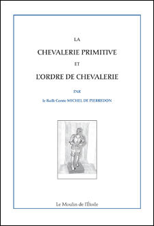
|
Dans ce texte rare paru en 1925 (25 exemplaires à compte d'auteur), le Bailly Comte Michel de Pierredon aborde la question des premières origines de la Chevalerie avant de décrire les rites, insignes et le cérémonial de réception du chevalier dans l'Ordre au cours des siècles. |
Format :
1 volume 14,8 x 21 cm
Broché, 52 pages
Tirage limité à 100 exemplaires
|
|
| _____________________________________________________________________________________________________________________ |
Aperçus numérologiques et kabbalistiques sur l'oeuvre de Nostradamus
|
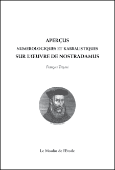
|
A l’origine
: un héritage. De ces cahiers de notes éparses,
l'auteur de cet ouvrage a souhaité extraire
l’essentiel du message afin de transmettre
une nouvelle voie d’interprétation et de
compréhension de l’œuvre de Michel de Notre-Dame.
Au moyen de chiffres et de nombres et grâce
à une profonde connaissance de la science
d’Hermès, François Trojani livre
ici une toute autre vision de ces apparentes
prévisions, maintes fois ressassées mais
dont le secret était jusqu’alors demeuré
intact...
|
Format :
1 volume 12 x 18 cm
Broché, 152 pages
Tirage limité à 100 exemplaires
|
|
| _____________________________________________________________________________________________________________________ |
L'hermétisme des marques d'imprimeurs
|
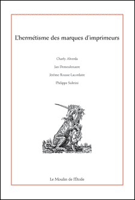
|
À travers
quatre études distinguant les monogrammes
et les marques et emblèmes utilisés
par les graveurs et imprimeurs de la Renaissance, Charly Alverda, Jérôme Rousse-Lacordaire,
Philippe Subrini et Jan Demeulenaere recensent l'état actuel des connaissances
hermétiques à propos de ce passionnant
sujet et ouvrent de nouvelles voies de réflexion. |
Format :
1 volume 14 x 21 cm
Broché, 244 pages
Tirage limité à 100 exemplaires
|
|
| _____________________________________________________________________________________________________________________ |
René Guénon et la massénie du Saint Graal - L'ésotérisme chrétien, les Templiers, l'origine de la Rose-Croix
|
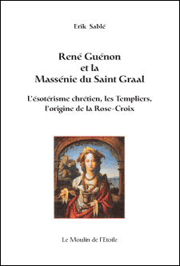
|
René Guénon avait
des conceptions très particulières sur l’ésotérisme
des templiers et l’origine de la rose-croix. Dans
certains ouvrages, il parle notamment d’une mystérieuse
Massénie du Saint Graal qui serait une des sources
de la Rose-Croix et de la franc-maçonnerie. Ces
idées sont apparemment dénuées de tout fondement
historique. Mais, il se trouve que la curieuse
aventure intérieure arrivée à une femme habitant
la région de Provins, qui fut mise en relation
par le biais des rêves avec un lointain passé,
confirme de façon très étonnante les idées de
René Guénon. C’est ce que montre ce petit ouvrage
d'Erik Sablé après avoir posé le
problème de l’ésotérisme chrétien et celui de
l’existence d’une hiérarchie secrète à l’intérieur
de l’ordre du Temple. |
Format :
1 volume 12 x 18 cm
Broché, 60 pages
Tirage limité à 200 exemplaires
|
|
| _____________________________________________________________________________________________________________________ |
Clef de la comédie anti-catholique de Dante Alighieri
|
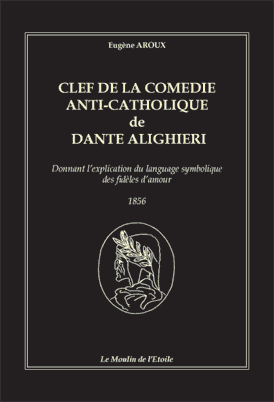
|
Jamais
réédité depuis son impression
en 1856, ce livre n'en appartient pas moins à
cette espèce quasi tératologique des
ouvrages que tout le monde connaît et que
personne n'a jamais lus… S'il en est ainsi, c'est
que sa renommée lui vient à coup sûr
en droite ligne de l'appréciation, si ce
n'est totalement élogieuse du moins fortement
commentée, que lui porta en son temps René
Guénon à la fois dans les colonnes
de la revue Le Voile d'Isis (livraisons
de février 1929 et mars 1932) mais surtout
dans son Ésotérisme de Dante ,
paru chez Charles Bosse en 1925 et pour une large
part consacré à cette organisation
initiatique chrétienne que fut la Fede
Santa .
Se présentant sous la forme d'un lexique,
d'Achan – « exterminé par le Seigneur,
comme devra l'être Philippe le Bel, pour s'être
approprié, dans les dépouilles du
Temple, le butin réservé au Seigneur »
– à Zodiaque – « l'ensemble des
croyants orthodoxes » –, le texte se
veut selon Aroux une « clef de la comédie
anti-catholique de Dante Alighieri, pasteur (sic)
de l'Église albigeoise dans la ville de Florence,
affilié à l'Ordre du Temple »
donnant « l'explication du langage symbolique
des Fidèles d'Amour dans les compositions
lyriques, romans et épopées chevaleresques
des troubadours ».
On ne saurait
mieux dire ! Ainsi pourrions-nous penser n'être
a priori qu'en présence du texte génial
d'un de ces fous littéraires du XIX e siècle
riche en « divulgations »
de toutes sortes. Voire du propos résolument
militant de l'écrivain catholique qu'il
s'efforça d'être tout au long de
son existence publique comme avocat et procureur
du Roi, parallèlement à une courte
carrière politique comme député
de Dieppe entre 1830 et 1837, soumettant ses écrits
à l' imprimatur et dédicaçant
plusieurs d'entre eux au Pape, se jetant enfin,
avec peut-être trop de vigueur, aux pieds
de la hiérarchie ecclésiastique… |
Format :
1 volume 14 x 21 cm
Broché, 60 pages
Tirage limité à 100 exemplaires
|
|
| _____________________________________________________________________________________________________________________ |
Le petit dictionnaire définitif de la franc-maçonnerie
|
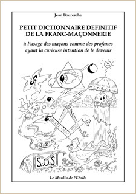
|
Cynique et
critique, se risquant parfois aux paillardises
mais toujours drôle, Jean Bouresche,
tel le Pierre Desproges de cette vénérable
institution, nous présente un dictionnaire
hors du commun.
Loin du pamphlet anti-maçonnique,
ce livre en dérangera certains mais
en ravira d'autres. |
Format :
1 volume 14 x 21 cm
Broché, 144 pages
Tirage limité
|
|
| _____________________________________________________________________________________________________________________ |
Autres ouvrages épuisés :
|
|
La gare qui n'avait pas de nom - Michelle de Mel
Le livre des bambous - Dai Kaizhi
Kaléidoscope - Frédérick Tristan
Emblèmes - Frédérick Tristan / Giovanni Tamburelli
Aphorismes - Dominique Fauconnier
Alchimie du souvenir - François Trojani
Jacques Zabor - Werner Lambersy / Tudor Banus / Louis Monier / Otto Ganz
Matières d'être - Otto Ganz / Catherine Amatheü
La société de plaisir - Jean-Louis Poitevin
Les enveloppes rouges : évolution et permanence des thèmes d'une image populaire chinoise - Sun Chengan
Les identités remarquables - Rafaël Mathieu
Luc & Clémence - Hervé Ferderspiel
Chroniques scolaires - Hervé Federspiel
Chansons pour nourrissons - Laurent Pierquin / Julie Vermeille
Le roi ne meurt jamais - Thomas Drelon
|
|
|
| _____________________________________________________________________________________________________________________ |
|
|
|
|
| |
|
|